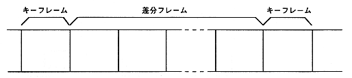

● About keyframes
There are two types of movie compression: spatial compression that compresses data within a frame, and time compression that compresses data by not having data that does not change from the previous frame. In general, a time-compressed frame is called a differential frame, while a frame with only spatial compression is called a key frame.
Cinepak is a compressor that supports differential frames, and it is possible to perform time compression by specifying key frames during compression. For example, if you select `` Key frame every 30 frames '', it will consist of one key frame and 29 difference frames (in reality, the Cinepak compressor may automatically insert key frames, (There may not be a key frame every 30 frames). The difference frame shows a kind of blocking phenomenon where the time-compressed part looks like a block. If compression is performed without specifying key frames, only the frame space compression is performed and there are no difference frames.

Figure 3.7 Relationship between key frame and difference frame
● Keyframe Pause
The Cinepak library pause function (CPK_Pause function) provides parameters for specifying immediate pause and keyframe pause. If a key frame pose is specified, it will not be paused until a key frame appears after starting the pose. Therefore, if you specify a key frame every second, you will have to wait up to 1 second after the pause is activated. This is to ensure synchronization with the sound when the pause is released. To avoid this, do not specify keyframes during Cinepak compression, or shorten the keyframe interval.